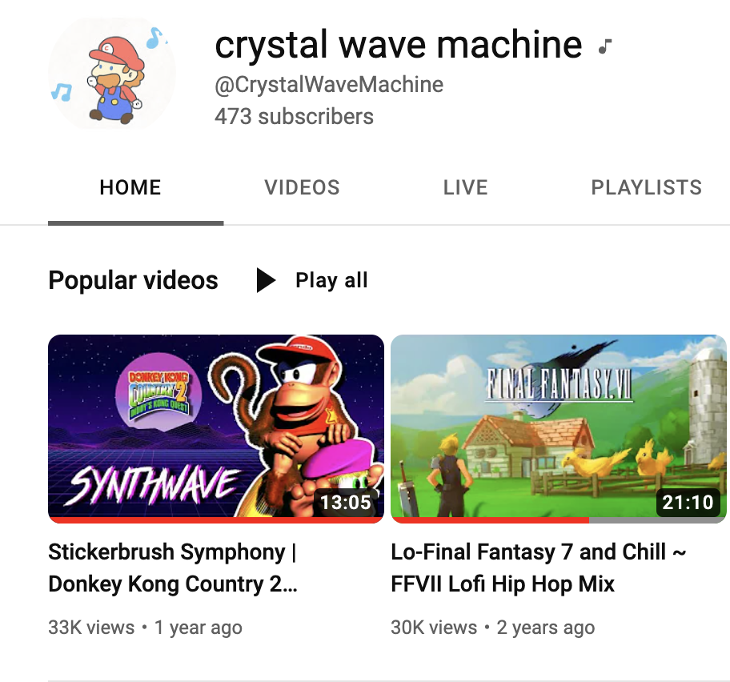
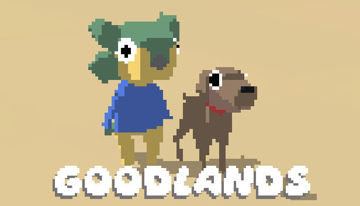

I enjoy making both instrumental music and vocal music. These days I mostly focus on remixes/covers of retro video game music, which I upload to my YouTube channel. I usually re-create songs in a lo-fi hip hop or synthwave style. Unfortunately I haven't uploaded in a while as I've been focusing on learning programming and frontend development, but have plans to release some of my remixes onto streaming platforms through a small record label soon.
 I'm also the composer for an upcoming video game called 'Goodlands'. This is a game about dinos digging up dinos. I hope to take on more video game composer roles in the future and have a goal to create my own game someday! Here are some of my favourite game soundtracks: